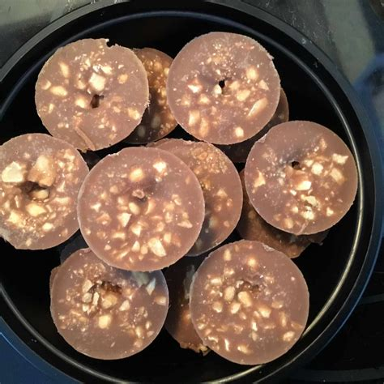

Peanutbutter Cup Recipe

Description
This keto recipe for peanut butter and chocolate cups is a modification of a peanut butter cup-style fat bomb recipe
Ingredients
- 1 cup coconut oil
- 1/2 cup natural peanut butter
- 2 tablespoons heavy cream
- 1 tablespoon cocoa powder
- 1 teaspoon sweetener
- 1/4 teaspoon kosher salt
- 1 ounce chopped roasted salted peanuts
Steps
- Melt coconut oil in a saucepan over low heat, 3 to 5 minutes.
- Stir in peanut butter until smooth.
- Whisk in heavy cream, cocoa powder, liquid stevia, vanilla extract, and salt.
- Pour chocolate-peanut butter mixture into molds.
- Freeze chocolate-peanut butter mixture until firm, at least 1 hour.